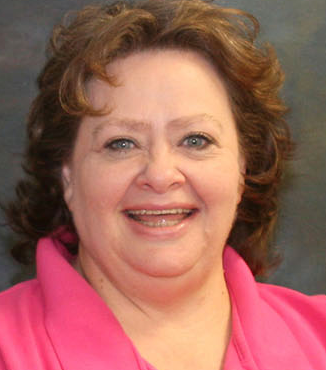

Information Technology & Systems
Overview
The Information Technology & Systems (IT&S) program provides an educational environment where fundamental knowledge and professional experience needed in the information technology profession is gained. Students are exposed to IT&S careers and technology through practical classroom experiences and lab activities. Students graduating from this program will be prepared to enter technology fields such as software development, help desk technical support or computer network design and support. Information technology skills are used in nearly every business.
Information Technology & Systems specialization areas include:
- Information Technology & Systems Developer
- Information Technology & Systems Networking
- Information Technology & Systems Technical Support
- Design, configure, troubleshoot and maintain networking environments for small business and enterprise organizations.
- Integrate technology resources into organizational and business processes using IT Service Management Techniques applying effective front-line technical support.
- Create software applications using System Development Methodologies.
- Demonstrate professional workplace skills to include: teamwork, ethical practice, legal considerations and effective customer service.
Careers
According to the Bureau of Labor Statistics, employment of computer and information technology occupations is projected to grow 13 percent from 2016 to 2026, faster than the average for all occupations. These occupations are projected to add about 557,100 new jobs. Demand for these workers will stem from greater emphasis on cloud computing, the collection and storage of big data, and information security.
Job titles in this occupation include:
Network Administrator,
Network Analyst, Systems Administrator, Server Administrator,
Computer Network Technician, Desktop Support Technician, Computer
Support Specialist, Support Specialist, Software Support Technician,
Helpdesk Support, Operations, Application Developer, Software Tester,
Programmer/Analyst, Web Developer, Web Administrator and Database Developer.
The median annual wage for computer and information technology occupations was $82,860 in May 2016, which was higher than the median annual wage for all occupations of $37,040 (Bureau of Labor Statistics, U.S. Department of Labor, 2017-2018 Occupational Outlook Handbook).
Program Options
Program Description
The Information Technology & Systems (IT&S) program provides an educational environment where fundamental knowledge and professional experience needed in the information technology profession is gained. Students are exposed to IT&S careers and technology through practical classroom experiences and lab activities. Students graduating from this program will be prepared to enter technology fields such as software development, helpdesk technical support or computer network design and support. Information technology skills are used in nearly every business. Information Technology & Systems specialization areas include:
- Information Technology & Systems Developer
- Information Technology & Systems Networking
- Information Technology & Systems Technical Support
Student Learning Outcomes
Information Technology & Systems graduates are prepared to:
- Design, configure, troubleshoot and maintain networking environments for small business and enterprise organizations.
- Integrate technology resources into organizational and business processes using IT Service Management Techniques applying effective front-line technical support.
- Create software applications using System Development Methodologies.
- Demonstrate professional workplace skills to include: teamwork, ethical practice, legal considerations and effective customer service.
CCC Catalog: Information Technology Catalog
Question/Answer
- How much hands-on practice is included?
- A majority of the Information Technology & Systems program is hands-on.
- Students will produce a variety of deliverables that can be included in a portfolio to take on future interviews.
- How do instructors teach these courses? What’s a typical day in class like?
- Courses are offered as lectures and also online. Our degree can be completed on campus or also fully online.
- How much of your program (not including general education courses) can be completed online?
- Our degree can be completed fully online. We also have courses in 3 out of the 5 general education categories.
- How long is the program, certificate, diploma?
- An Associate of Applied Science degree can be completed in 2 years for full time students. A diploma can be completed in one year for full time students. A certificate consists of 12 credits or typically 4 courses and can be completed in one semester depending on course availability.
- If there is waitlist-what can students do in the meantime?
- If the student is on a waitlist for a course, then we typically enroll them in another required course and the advisor monitors the wait listed students. When an opening occurs the advisor enrolls the student accordingly all while keeping the student informed of the process.
Testimonials
 Peggy Chessmore – Instructional Technology Support
Peggy Chessmore graduated in May 2000 with an Associate Degree in Information Technology, specializing as an Integrated Application Systems Specialist. She went on to receive her Bachelors and Master Degrees from Belleview University in Business Information Systems and Leadership, respectively.
Starting in January of 2000 she starting working with the newly forming online courses in the Learning Support Services (LSS) office on the Hastings Campus of Central Community College. Peggy is starting her 18th year of working in the LSS office as an Instructional Technology Specialist.
Austin Shaw – Systems Analyst
Austin Shaw received his Associate Degree in Information Technology – Developer and is a Systems Analyst for Mid-America Computer Corporation. He develops a desktop application for telephone companies that manages over 750,000 customers. The application also turns on phone and internet lines, and sends out their bills. He works with a team of 6 other developers. The application is coded in Delphi (which is similar to C#) and connects to a SQL Server Database. They also have a web app that connects to the same database as the desktop app, but with limited functionality. The web app is coded in C# and uses MVC software architecture. What he does on a daily basis is develop new functionality for their software, as well as analyze and design solutions for proposed changes. He also tracks down and repairs defects, and researches new technologies that will benefit their customers and integrates those upgrades into the existing software.
Simeon Berns – Business Owner
I graduated the IT program at CCC in 2009. After graduating I worked at Hastings Utilities for almost 5 years. During that time, I continued to progress and develop, using the skills I learned at CCC. In 2014 I took a job at Xpanxion in Kearney, NE, where I worked with a team at Sony, building automated tests for one of their internal web applications. A couple years later, in 2016, I started my own software development consultancy and have been doing that ever since. These days I primarily work with Ruby on Rails, EmberJS and Cucumber.
I think the most important thing I learned at CCC was how to think critically and problem solve. In my experience in the IT field (specifically software development), that is one of the most important skills to possess. You can learn a new language or tool by watching YouTube or just simple trial and error. But if you can’t solve problems and debug properly, then the new languages aren’t that useful.
Joe McMinamen – Technology Director
I graduated from CCC IT program in 2008. After graduation I continued my education at Wayne State College while also working as an intern for ConAgra Foods in Omaha. I graduated from Wayne State in 2010 with a Bachelor degree in Computer Information Systems. My internship moved to full time employment and I continued with ConAgra Foods for 5 more years. I am currently the Technology Director for the West Harrison Community School in Mondamin, IA. Here I am in charge of all IT aspects from our 1 to 1 program down to networking and wireless technologies.
The most important thing I learned at CCC was how to solve difficult problems using the tools and people around you. Learning to network with other students and IT professionals can help you to accomplish many tasks. The instructors are very supportive of their students and help give them the skills they will continue to use throughout their professional lives.
 Dustin Johnson – IT Administrator
Dustin Johnson – IT Administrator
I was a student at CCC Hastings from 1998 to 2000. It was a great place to learn and prep for future endeavors. The instructors were always easy to talk to and always willing to help. I took computer hardware and language base classes during my time there.
After I graduated I went on to work for AxtellTech a small wireless ISP. Then in 2001 I jointed Platte Valley Communications as a Computer Technician and later becoming the IT Administrator, managing a team of IT and Security Technicians. We manage small business IT infrastructure; everything from running bulk cabling to server administration. We also install a full array of Access Control, Surveillance, and Security Systems. These days the line in between IT and Security is pretty thin.
 Devin Burch - Current Student
Devin Burch - Current Student
CCC has given me the opportunity to reinvent myself and my future. In the nearly two years I've spent working towards a degree in Information Technology and Systems Development, I've learned so much and grown as a both a student and a soon-to-be software developer. The affordable program allowed me to focus on my education rather than worrying about how I would support myself while paying for college. Thanks to the dedication of the instructors and staff at CCC, I feel ready to move on to a great paying job in a field I've grown to love. What more could you ask for?